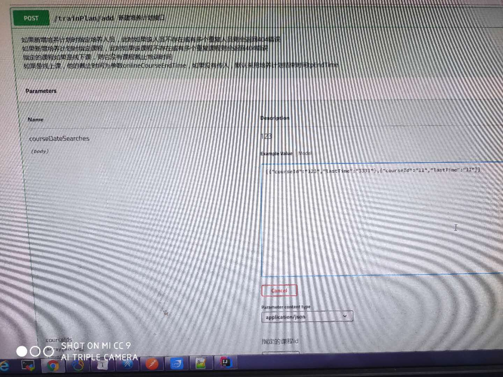

前言
手写文档的痛苦不说也能体会
- 文档需要更新的时候，需要再次发送一份给前端，也就是文档更新交流不及时。
- 接口返回结果不明确
- 不能直接在线测试接口，通常需要使用工具，比如：
Postman
- 接口文档太多，不好管理
使用 Swagger 解决问题
Swagger 也就是为了解决这个问题，当然也不能说 Swagger 就一定是完美的，当然也有缺点，最明显的就是代码植入性比较强。
但是呢，我感觉植入性强也比手写代码要好。
maven依赖
增加 Swagger2 所需依赖，pom.xml 配置如下：
1
2
3
4
5
6
7
8
9
10
11
12
|
<dependency>
<groupId>io.springfox</groupId>
<artifactId>springfox-swagger2</artifactId>
<version>2.9.2</version>
</dependency>
<dependency>
<groupId>io.springfox</groupId>
<artifactId>springfox-swagger-ui</artifactId>
<version>2.9.2</version>
</dependency>
|
配置Swagger2
注意：RequestHandlerSelectors.basePackage("com.example.demo.control") 为 Controller 包路径，不然生成的文档扫描不到接口
创建一个名为 Swagger2Configuration 的 Java 配置类，代码如下：
1
2
3
4
5
6
7
8
9
10
11
12
13
14
15
16
17
18
19
20
21
22
23
24
25
26
27
28
29
30
| import org.springframework.context.annotation.Bean;
import org.springframework.context.annotation.Configuration;
import springfox.documentation.builders.ApiInfoBuilder;
import springfox.documentation.builders.PathSelectors;
import springfox.documentation.builders.RequestHandlerSelectors;
import springfox.documentation.service.ApiInfo;
import springfox.documentation.spi.DocumentationType;
import springfox.documentation.spring.web.plugins.Docket;
@Configuration
public class Swagger2Configuration {
@Bean
public Docket createRestApi() {
return new Docket(DocumentationType.SWAGGER_2)
.apiInfo(apiInfo())
.select()
.apis(RequestHandlerSelectors.basePackage("com.example.demo.control"))
.paths(PathSelectors.any())
.build();
}
private ApiInfo apiInfo() {
return new ApiInfoBuilder()
.title("API 文档")
.description("API 网关接口")
.termsOfServiceUrl("xxx")
.version("1.0.0")
.build();
}
}
|
启用Swagger2
Application 中加上注解 @EnableSwagger2 表示开启 Swagger
1
2
3
4
5
6
7
8
9
10
| @SpringBootApplication
@EnableSwagger2
public class ValidationApplication {
public static void main(String[] args) {
SpringApplication.run(ValidationApplication.class, args);
}
}
|
使用Swagger2
1
2
3
4
5
6
7
8
9
10
11
12
13
14
15
16
17
18
19
20
21
22
23
24
25
26
27
28
29
30
31
32
33
34
35
36
37
38
39
40
41
42
43
44
45
46
47
48
49
50
51
52
53
|
@Slf4j
@Validated
@RestController
@RequestMapping("/postInfo")
public class PostInfoController {
private PostInfoService postInfoService;
@ApiOperation(value = "首页帖子查询", notes = "必须声明排序方式")
@ApiImplicitParams({
@ApiImplicitParam(name = "sortType", value = "排序方式", required = true, paramType =
"query", dataType = "String"),
@ApiImplicitParam(name = "current", value = "当前页", required = false, paramType =
"query",
dataType = "String"),
@ApiImplicitParam(name = "size", value = "size", required = false, paramType =
"query",
dataType = "String"),
@ApiImplicitParam(name = "Authorization", value = "Authorization", required = false, paramType =
"header",
dataType = "String")
})
@PostMapping("selectHome")
public ResponseEntity selectPostHome(@NotBlank String sortType, @ApiIgnore Page page) {
if (StringUtils.isEmpty(sortType)) {
return ResponseEntity.failed("排序方式不能为空！");
}
IPage<PostInfoVO> result = postInfoService.selectPostHome(sortType, page);
if (result == null) {
return ResponseEntity.failed("查询失败");
} else {
return ResponseEntity.ok().setData(result);
}
}
@Autowired
public void setPostInfoService(PostInfoService postInfoService) {
this.postInfoService = postInfoService;
}
}
|
访问Swagger2
访问地址：http://ip:port/swagger-ui.html
Swagger2的使用问题
一般接口参数全部使用JavaBean来接受，但其中又不是所有的属性都会使用，这样每次生成的文档都会生成此JavaBean的所有属性，很乱
如果使用Swagger2的对JavaBean的注解很麻烦，而且不同接口使用同一JavaBean接收，接受的属性有不同
我能找到的方法就是：使用@ApiIgnore注解手动忽略这个Bean，自己手动在方法上方使用@ApiImplicitParams手动把需要的Bean中的属性写出来
SpringBoot如果访问不到Swagger2的页面，请如下配置Swagger2Configuration
1
2
3
4
5
6
7
8
9
10
11
12
13
14
15
16
17
18
19
20
21
22
23
24
25
26
27
28
29
30
31
32
33
34
35
36
37
38
39
40
41
42
43
44
45
46
47
48
49
50
51
52
53
54
55
56
57
58
59
60
61
62
63
64
65
66
67
68
69
70
71
72
73
74
75
76
77
78
79
80
81
82
83
84
85
86
87
88
89
| package com.fh.colleagues.config;
import com.fh.colleagues.auth.ParseToken;
import org.springframework.context.annotation.Bean;
import org.springframework.context.annotation.Configuration;
import org.springframework.web.servlet.config.annotation.ResourceHandlerRegistry;
import org.springframework.web.servlet.config.annotation.WebMvcConfigurationSupport;
import springfox.documentation.builders.ApiInfoBuilder;
import springfox.documentation.builders.PathSelectors;
import springfox.documentation.builders.RequestHandlerSelectors;
import springfox.documentation.service.ApiInfo;
import springfox.documentation.service.ApiKey;
import springfox.documentation.service.AuthorizationScope;
import springfox.documentation.service.SecurityReference;
import springfox.documentation.spi.DocumentationType;
import springfox.documentation.spi.service.contexts.SecurityContext;
import springfox.documentation.spring.web.plugins.Docket;
import java.util.ArrayList;
import java.util.List;
@Configuration
public class Swagger2Configuration extends WebMvcConfigurationSupport {
@Bean
public Docket createRestApi() {
return new Docket(DocumentationType.SWAGGER_2)
.useDefaultResponseMessages(false)
.apiInfo(apiInfo())
.ignoredParameterTypes(ParseToken.class)
.select()
.apis(RequestHandlerSelectors.basePackage("com.fh.colleagues.controller"))
.paths(PathSelectors.any())
.build()
.securitySchemes(securitySchemes())
.securityContexts(securityContexts());
}
private List<ApiKey> securitySchemes() {
ArrayList<ApiKey> apiKeys = new ArrayList<>();
apiKeys.add(new ApiKey("Authorization", "Authorization", "header"));
return apiKeys;
}
private List<SecurityContext> securityContexts() {
ArrayList<SecurityContext> apiKeys = new ArrayList<>();
apiKeys.add(SecurityContext.builder()
.securityReferences(defaultAuth())
.build());
return apiKeys;
}
List<SecurityReference> defaultAuth() {
AuthorizationScope authorizationScope = new AuthorizationScope("global", "accessEverything");
AuthorizationScope[] authorizationScopes = new AuthorizationScope[1];
authorizationScopes[0] = authorizationScope;
List<SecurityReference> securityReferences=new ArrayList<>();
securityReferences.add(new SecurityReference("Authorization", authorizationScopes));
return securityReferences;
}
private ApiInfo apiInfo() {
return new ApiInfoBuilder()
.title("MyShop API 文档")
.description("zzzzz")
.termsOfServiceUrl("asd")
.version("1.0.0")
.build();
}
@Override
public void addResourceHandlers(ResourceHandlerRegistry registry) {
registry.addResourceHandler("swagger-ui.html")
.addResourceLocations("classpath:/META-INF/resources/");
registry.addResourceHandler("/webjars/**")
.addResourceLocations("classpath:/META-INF/resources/webjars/");
}
}
|
如果想对接口中的自定义注解的JavaBean忽略（比如：使用参数解析器自动解析得来的JavaBean不是用户传递的），请在conig中声明ignoredParameterTypes(ParseToken.class)
如果所有（大部分）请求都需要请求头用于验证，参照上面注释，可设置正则排除不被token覆盖的方法！
在这里输入token，所有请求会自动带上它
SpringBoot如果访问Swagger2的页面，一直轮询弹窗
在启动类上加上@EnableSwagger2注解
1
2
3
4
5
6
7
8
9
10
| @SpringBootApplication
@EnableSwagger2
public class ValidationApplication {
public static void main(String[] args) {
SpringApplication.run(ValidationApplication.class, args);
}
}
|
Swagger 常用注解说明
Swagger 通过注解表明该接口会生成文档，包括接口名、请求方法、参数、返回信息的等等。
常用注解
@Api：修饰整个类，描述 Controller 的作用@ApiOperation：描述一个类的一个方法，或者说一个接口@ApiParam：单个参数描述@ApiModel：用对象来接收参数@ApiProperty：用对象接收参数时，描述对象的一个字段@ApiResponse：HTTP 响应其中 1 个描述@ApiResponses：HTTP 响应整体描述@ApiIgnore：使用该注解忽略这个API@ApiError：发生错误返回的信息@ApiImplicitParam：一个请求参数@ApiImplicitParams：多个请求参数
@Api
说明：用在请求的类上，表示对类的说明
常用参数：
- tags=”说明该类的作用，非空时将覆盖 value 的值”
- value=”描述类的作用”
其他参数：
- description 对 api 资源的描述，在 1.5 版本后不再支持
- basePath 基本路径可以不配置，在 1.5 版本后不再支持
- position 如果配置多个 Api 想改变显示的顺序位置，在 1.5 版本后不再支持
- produces 设置 MIME 类型列表（output），例：”application/json, application/xml”，默认为空
- consumes 设置 MIME 类型列表（input），例：”application/json, application/xml”，默认为空
- protocols 设置特定协议，例：http， https， ws， wss
- authorizations 获取授权列表（安全声明），如果未设置，则返回一个空的授权值。
- hidden 默认为 false，配置为 true 将在文档中隐藏
示例：
1
2
3
| @Api(tags="登录请求")
@Controller
public class LoginController {}
|
@ApiOperation
说明：用在请求的方法上，说明方法的用途、作用
常用参数：
- value=”说明方法的用途、作用”
- notes=”方法的备注说明”
示例：
1
2
3
4
5
| @ResponseBody
@PostMapping(value="/login")
@ApiOperation(value = "登录检测", notes="根据用户名、密码判断该用户是否存在")
public UserModel login(@RequestParam(value = "name", required = false) String account,
@RequestParam(value = "pass", required = false) String password){}
|
@ApiImplicitParams
说明：用在请求的方法上，表示一组参数说明；@ApiImplicitParam：用在 @ApiImplicitParams 注解中，指定一个请求参数的各个方面
常用参数：
- name：参数名，参数名称可以覆盖方法参数名称，路径参数必须与方法参数一致
- value：参数的汉字说明、解释
- required：参数是否必须传，默认为 false （路径参数必填）
- paramType：参数放在哪个地方
- header 请求参数的获取：
@RequestHeader
- query 请求参数的获取：
@RequestParam
- path（用于 restful 接口）–> 请求参数的获取：
@PathVariable
- body（不常用）
- form（不常用）
- dataType：参数类型，默认 String，其它值 dataType=”Integer”
- defaultValue：参数的默认值
示例：
1
2
3
4
5
6
7
8
9
| @ResponseBody
@PostMapping(value="/login")
@ApiOperation(value = "登录检测", notes="根据用户名、密码判断该用户是否存在")
@ApiImplicitParams({
@ApiImplicitParam(name = "name", value = "用户名", required = false, paramType = "query", dataType = "String"),
@ApiImplicitParam(name = "pass", value = "密码", required = false, paramType = "query", dataType = "String")
})
public UserModel login(@RequestParam(value = "name", required = false) String account,
@RequestParam(value = "pass", required = false) String password){}
|
@ApiModel
说明：用于响应类上，表示一个返回响应数据的信息（这种一般用在 POST 创建的时候，使用 @RequestBody 这样的场景，请求参数无法使用 @ApiImplicitParam 注解进行描述的时候）；@ApiModelProperty：用在属性上，描述响应类的属性
其他参数(@ApiModelProperty)：
- value 此属性的简要说明。
- name 允许覆盖属性名称
- allowableValues 限制参数的可接受值。1.以逗号分隔的列表 2.范围值 3.设置最小值/最大值
- access 允许从 API 文档中过滤属性。
- dataType 参数的数据类型。可以是类名或者参数名，会覆盖类的属性名称。
- required 参数是否必传，默认为 false
- position 允许在类中对属性进行排序。默认为 0
- hidden 允许在 Swagger 模型定义中隐藏该属性。
- example 属性的示例。
- readOnly 将属性设定为只读。
- reference 指定对相应类型定义的引用，覆盖指定的任何参数值
示例：
1
2
3
4
5
6
7
8
9
10
11
12
13
14
15
16
17
| @ApiModel(value="用户登录信息", description="用于判断用户是否存在")
public class UserModel implements Serializable{
private static final long serialVersionUID = 1L;
@ApiModelProperty(value="用户名")
private String account;
@ApiModelProperty(value="密码")
private String password;
}
|
当我们control返回数据时会展示出每个字段的注释，前提是必须指定返回的类型(不能是Object)，最好是使用统一返回类ResponseEntity<T>的泛型！
使用
如何传送基础类型的数组
1
2
3
4
5
6
7
| @ResponseBody
@PostMapping(value="/login")
@ApiOperation(value = "登录检测", notes="根据用户名、密码判断该用户是否存在")
@ApiImplicitParams({
@ApiImplicitParam(name = "names", value = "用户名", required = false, paramType = "query", dataType = "String", allowMultiple = true)
})
public UserModel login(String[] names){}
|
重点在于
ApiImplicitParam中的allowMultiple = true- 参数中的
String[]
如何传送自定义Bean的数组
1
2
3
4
5
6
| @ResponseBody
@PostMapping(value="/login")
@ApiImplicitParams({
@ApiImplicitParam(name = "CourseDateSearchs", value = "用户名", required = false, paramType = "body", dataType = "CourseDateSearch", allowMultiple = true)
})
public UserModel login(@RequestBody CourseDateSearch[] CourseDateSearchs){}
|
1
2
| @ApiModel(value="CourseDateSearch", description)
public class CourseDateSearch{}
|
重点在于
ApiImplicitParam中的allowMultiple = trueApiImplicitParam中的dataType = "CourseDateSearch"等于@ApiModel(value="CourseDateSearch", description)- 参数中的
@RequestBody（将传入的json字符串自动解析为CourseDateSearch[]）
ApiImplicitParam中的body- 注意，使用
@RequestBody必须为POST请求
如何使用见图：

如何传送时间
我用时间戳来表示时间，数据库字段也是时间戳；这样能省去很多麻烦。
1
2
| @GetMapping("testTime")
public ResponseEntity testTime(Test time){}
|
我们使用java8的java.time.Instant作为参数，他能将前台传送的ISO时间字符串映射成Instant时间
而前台只需要new Date().toISOString()构造值，然后time:new Date().toISOString()发送请求后台就能直接接收到。当我们返回值是Instant类型时，前台接收到的是10位时间戳！
Test是一个实体类，Instant参数只能作为实体类中的属性接收，否则报错
或者，我们前台传送字符串，后台使用@DateTimeFormat注解标识，可以使用Date、LocalDateTime类型接收。